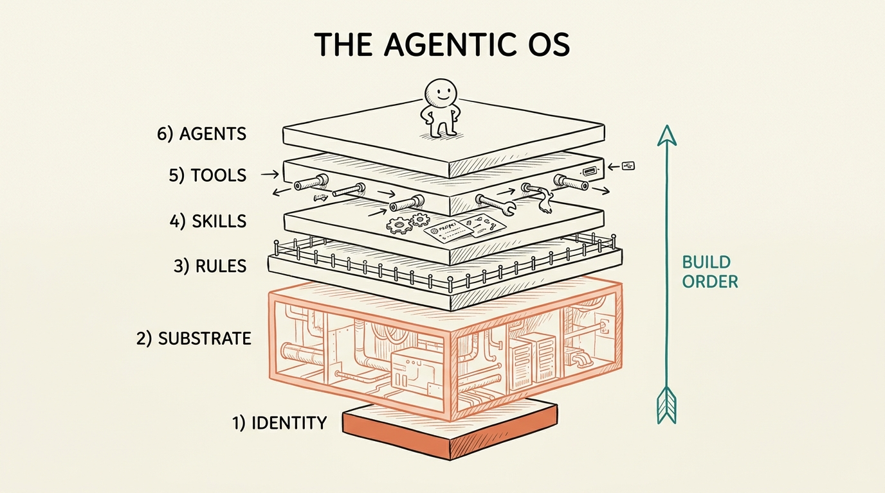
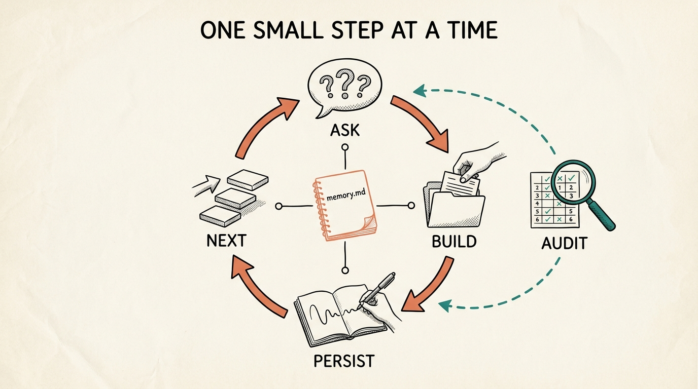

Uma skill que conduz uma pessoa não técnica na construção do próprio sistema operacional agêntico, na pasta em que você rodar. Ela faz o trabalho técnico. Você toma as decisões.

O modelo é os 20% baratos. Você não consegue conversar com seus dados se a cozinha está uma bagunça, então o /os-coach constrói a cozinha primeiro e só então empilha capacidade em cima. A pasta em que você roda é o OS: tudo vira arquivos reais, seus pra editar e manter.
Sem jargão. Faz o trabalho técnico por você, cria os arquivos e pastas e explica em uma frase simples o que fez e por quê. Assume que você nunca abriu um terminal.
Escreve tudo em memory.md. Você pode parar no meio e voltar depois, até em outra sessão, sem perder o lugar. Toda rodada lê esse arquivo primeiro e o atualiza por último.
Cada sugestão é ancorada no SEU objetivo e no que está na sua pasta agora. Peça uma auditoria e ele pontua as 6 camadas e te dá os 3 próximos passos de maior alavancagem, em ordem.
O coach faz 2 a 3 perguntas em português simples, constrói os arquivos reais quando você responde, anota onde você está e aponta a próxima camada. Tudo lê e escreve um único memory.md, então ele sempre sabe de onde continuar. Peça uma auditoria a qualquer momento e o resultado realimenta o ciclo.

Da fundação ao topo. Identidade é a base, o Substrato (a cozinha) é a maior camada, e os Agentes só entram quando tudo abaixo deles está sólido.
CLAUDE.md.substrate/.rules/.skills/.tools.md.agents/.Sem chaves de API, sem dependências, sem build. Você roda /os-coach e segue.
O OS Coach é uma skill do Claude Code. Só precisa dele instalado.
# instale em https://claude.com/claude-code
Nada mais a instalar. Tudo que ele cria são arquivos de texto simples na sua pasta.
# sem API keys, sem build, sem libsInstale a skill uma vez, entre na pasta que você quer virar um OS e siga os comandos. Você só responde perguntas em português e toma as decisões.
Copie a pasta os-coach para o diretório de skills do Claude Code.
cp -r os-coach ~/.claude/skills/ # instala /os-coach
Entre em qualquer pasta e diga seu objetivo em uma frase. Ele cria a pasta-OS, captura o objetivo nas suas palavras e começa pela Identidade.
/os-coach start Quero nunca mais perder um prazo de cliente
Ele vai pra próxima camada não terminada, faz 2 a 3 perguntas e constrói o arquivo quando você responde.
/os-coach next # coacha a próxima camada
Vá direto pra camada que você quer aprofundar.
/os-coach layer identity # ou substrate, rules, skills, tools, agents
Mostra o mapa de progresso lido do memory.md, sem fazer mais nada.
/os-coach status
Pontua as 6 camadas contra o seu objetivo, dá os 3 movimentos de maior alavancagem e salva o relatório em OS-AUDIT.md.
/os-coach audit # gera OS-AUDIT.md
Um fotógrafo de casamento solo quer parar de perder prazos. Os clientes aparecem como Casal A, Casal B porque ele marcou os nomes como sensíveis, então o coach guarda apelidos não identificáveis em vez dos nomes reais.
/os-coach start Sempre perco prazos e quero nunca mais atrasar uma entrega
O coach confirma o objetivo, prepara a pasta e faz 3 perguntas curtas. Você responde, e ele escreve seu CLAUDE.md (a Identidade) já com suas recusas: nunca mandar mensagem a um cliente sem sua aprovação, nunca deixar um prazo passar quieto.
Dentro de 3 dias, sua regra "sempre avise" disparou: - Casal B, galeria completa vence 2026-07-01 (faltam 3 dias) Vencendo em até 10 dias: - Casal C, prévia vence 2026-07-02 (faltam 4 dias)
Ele monta um tracker que calcula os dois prazos a partir da data do casamento e já responde a sua pergunta na hora.
## Placar | Camada | Nota | Por quê | |------------|----------|---------| | Identidade | Sólida | CLAUDE.md declara a missão e duas recusas. | | Substrato | Iniciada | Responde "vence em breve", mas não "já atrasou". | | Regras | Faltando | Apelidos de clientes na pasta, nada barra backup público. | ## Os três movimentos que mais importam 1. Regras: escreva rules/never.md (nunca fazer backup público desta pasta). 2. Substrato: marque quais galerias foram enviadas. 3. Skills: transforme a checagem de prazo em um comando repetível.
Cada arquivo é real, ancorado no seu objetivo, e seu pra manter.